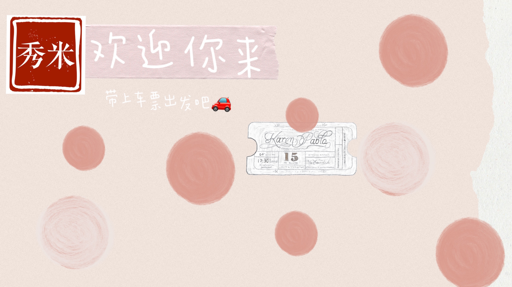
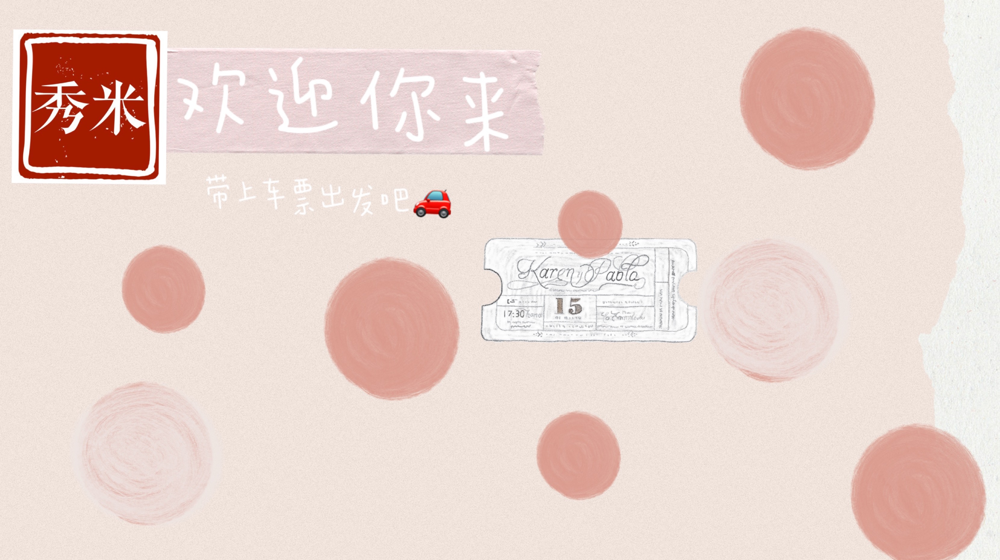

让公众号文章变美，吸引更多读者的关注，是很多编辑小伙伴对图文编辑器的简朴诉求。有的小伙伴觉得，内容想要写好已经很不容易了，排版若只是锦上添花，倒不如专心磨练文笔；有的小伙伴觉得自己的内容没写好，于是寄望于排版工具，多找几个漂亮的样式就能丰富单薄的图文内容，结果反而搞得过于花哨，适得其反。
排版在内容创作的流程中，往往被认为是最后的一步，或者是个可有可无的步骤。试想想有些时候为了突出部分重点内容，会特意加粗或放大部分字体；有些时候为了让一篇长文读起来不那么乏味，会将长文梳理出几个小节，用序号或者小标题为读者“导航”阅读。这些操作不需要某个特定编辑器来完成，但做这些事情的时候，其实就是在排版了。由此可见，排版设计并不只是给某些内容加些样式，而是通过梳理图文内容的逻辑和结构，找到合适的排版呈现方式。
秀米图文排版为大家提供文字内容排版美化的工具，主要被广泛应用在微信公众号图文；除此之外，秀米还可以生成长图和贴纸图文，发布于更多的内容平台上，同时秀米图文链接（图文分享页面）本身也可以作为一个独立的内容传播页面。